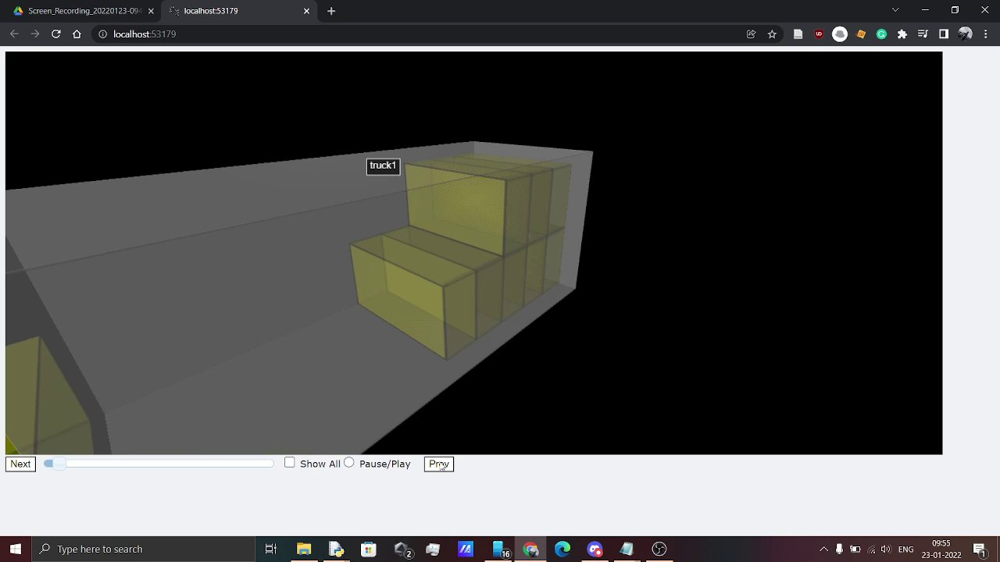
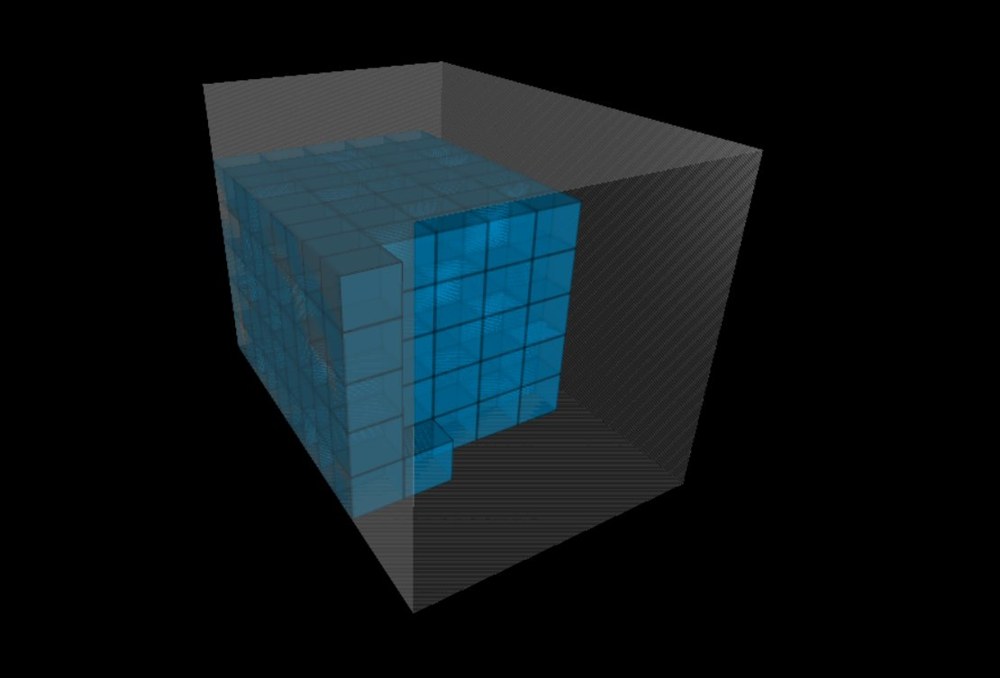

The idea
We built a planner that takes the dispatch list and packing rules and turns the result into a step-by-step 3D loading guide.
1Background
Our team worked from a company problem statement at IIT Bombay's Ideate competition: make better use of truck space while respecting product-specific packing rules.
Loading is also constrained by rules that differ by product: how high a product can be stacked, and which way up it has to travel. The people who do the loading speak different languages and have different levels of technical literacy, so a printed table of coordinates is of little use at the dock.
2What we built
- Assign products to trucks. A reinforcement-learning bin-packing agent treats each product as an item and each truck as a bin. It is a stacked LSTM network built on Ruben Solozabal's open-source code for neural combinatorial optimisation, and its behaviour is close to the First-Fit rule.
- Place the products in 3D. A 3D bin-packing step takes the ordered list from the first step and places items one by one, respecting stacking limits and orientation rules. It is based on an open-source 3D bin-packing script that follows the strategy of Dube and Kanavathy.
- Show the plan. An interactive 3D animation, written with VPython and rendered with WebGL, shows the loading order in any web browser. It has controls for viewpoint, speed, pause and play, and next and previous item.
We separated truck assignment from placement so the planner could first decide what travels together, then work out how those products fit. At the dock, a loader can stop the animation on the next item and turn the view to see where it goes and which way up.




We also proposed a Green Score for packaging materials: the average of a material's carbon footprint and its cost per tonne, so that a planner can compare packaging choices on one number.
3Result
PackMax placed second nationally at Ideate, IIT Bombay Techfest, in January 2022. In the same competition the team's E-Metric entry placed second in the Electrifying Transportation track.